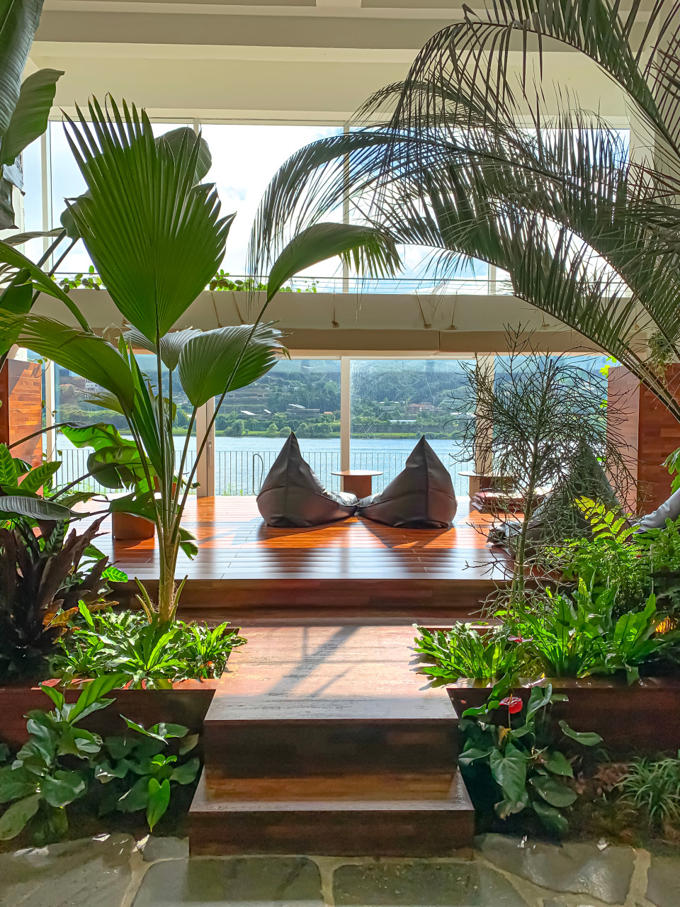
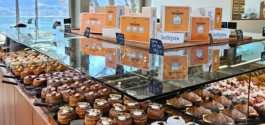
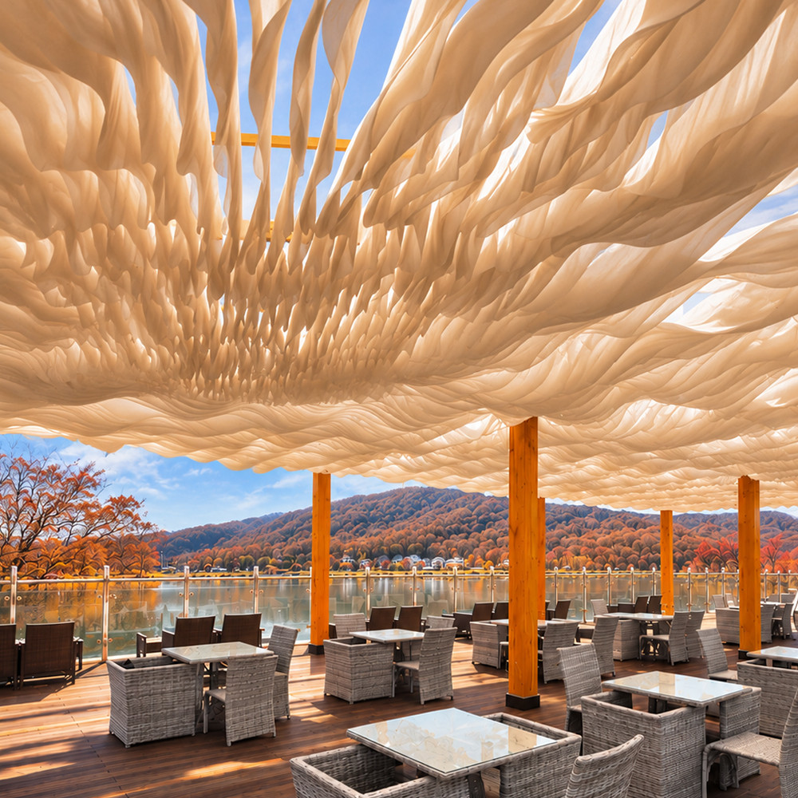
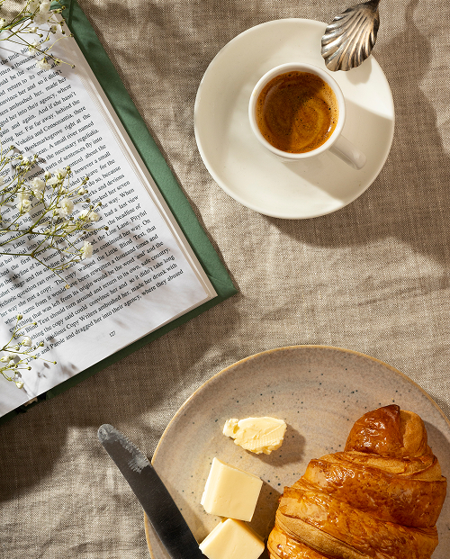

카페 기록

11.01
11.01
11.01

좋은 카페와 맛있는 커피를 사랑하는 사람,
오늘도 카페를 찾아 떠납니다.
커피
디저트
카페투어

11.01
11.01
11.01진한 에스프레소와 부드러운 우유가 어우러진, 매일 마셔도 질리지 않는 커피를 좋아합니다.
바삭한 크루아상부터 부드러운 케이크까지, 커피와 함께 즐기는 달콤한 디저트를 좋아합니다.
은은한 햇살과 우드톤 인테리어, 잔잔한 음악이 어우러지는 편안하고 아늑한 카페를 선호합니다.